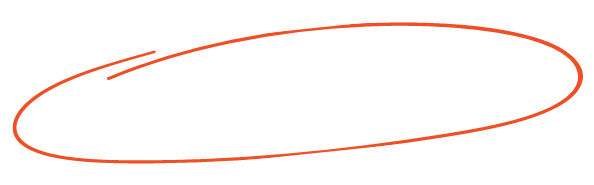
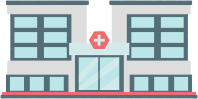
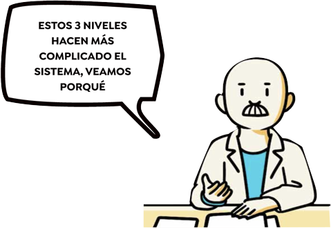
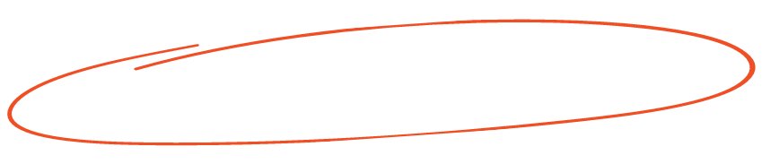

Por favor, gira tu dispositivo para apreciar mejor la animación
¿Cómo debería ser nuestro sistema de salud?
Descargando video…
Proyectando la atención que todos merecemos…
Scroll para interactuar
El mundo ideal
que no tenemos
La salud que merecemos es posible
Pero en el Perú, enfermarse es un riesgo que se paga con tiempo y vidas. Mientras la OMS recomienda
invertir el 6% del PBI en salud, nuestro país ni siquiera alcanza el promedio regional del 3.8%. El
resultado es una espera eterna: semanas para una cita, meses para un examen y décadas para una
infraestructura que no llega.
El laberinto de
la salud pública

Los cinco gigantes de la salud
El sistema se divide en cinco actores que operan de forma aislada. El MINSA (rector), EsSalud
(seguridad social), las sanidades de las FF.AA. y la PNP, y el sector Privado. Aunque cada uno
tiene su población asignada, en la práctica millones de peruanos caen en los vacíos que hay entre ellos.
El primer nivel debería resolver el 80% de las necesidades médicas, pero con un 95% de locales en
condiciones precarias, el sistema colapsa. Terminamos en hospitales saturados por problemas que
debieron resolverse cerca de casa
Cómo se organiza el sistema de salud en el Perú
MINSA
Es la cabeza del sistema: define las reglas, regula y supervisa. Pero también
atiende directamente a los pacientes a través de las DIRIS en Lima, las DIRESA y GERESA en las 24
regiones, y sus hospitales nacionales e institutos especializados.
Ana explica
El patrón es el mismo de siempre: el sistema que tiene menos recursos atiende a
más gente, con enfermedades que deberían resolverse antes de llegar a una consulta. No es mala
suerte. Es lo que pasa cuando la prevención no existe.
Ana explica
¿Sabías que Susalud protege tus derechos? Sin importar si te
atiendes en un centro público o privado, ellos aseguran que recibas el trato que mereces. Si tienes
problemas con tu atención, pide ayuda aquí: Línea gratuita: 113 (opción 7) o a través de la web: www.susalud.gob.pe
Ana explica
Un médico SERUM es un recién egresado que hace su año rural obligatorio antes de
poder ejercer. En muchas regiones, es el único médico disponible. Cuando termina su año, se va — y
la posta vuelve a quedar vacía.
Ana explica
Un edificio viejo no es solo un problema estético. Es una sala de espera sin
ventilación, un quirófano sin luz de respaldo, una posta que se inunda cuando llueve. Si el
establecimiento falla, el primero en pagarlo es el paciente que no tiene otra opción.
Subsectores/Prestadores
En el Perú, no existe un solo sistema de salud sino varios que funcionan en
paralelo:
Selecciona Desliza y selecciona
MINSA + Gobiernos RegionalesA nivel nacional
Postas, centros de salud, hospitales regionales, nacionales e
institutos especializados.
8, 524Centros/postas

145Hospitales generales
36Institutos
182Sin categoría definida
EsSaludA nivel nacional
CAP, policlínicos, hospitales generales, hospitales nacionales e
institutos.
316Centros/postas
67Hospitales generales
12Institutos
11Sin categoría definida
FF.AA.A nivel nacional
Centros médicos, policlínicos y hospitales del Ejército, Marina y
Fuerza Aérea.
200Centros/postas
2Hospitales generales
3Institutos
19Sin categoría definida
PNPA nivel nacional
Policlínicos, centros médicos y hospitales de la Policía Nacional del
Perú.
78Centros/postas
3Hospitales generales
1Institutos
0Sin categoría definida
PrivadosA nivel nacional
Clínicas, consultorios y ONGs. Las EPS y aseguradoras privadas
canalizan a sus asegurados hacia esta red.
11, 627Centros/postas
382Hospitales generales
6Institutos
4, 647Sin categoría definida
Fuente: Repositorio Único Nacional de Información de Salud (Reunis)
Nota sobre aseguramiento
¿Quién te atiende?. Aunque el Perú cuenta con Aseguramiento Universal (AUS), el
lugar donde te atiendes lo decide tu empleo o tus ingresos. Esta fragmentación del sistema genera
brechas profundas en la calidad de la atención.
Niveles de atención del MINSA
Selecciona

Primer Nivel (I-1 a I-4)
El muro debilitado: Postas, centros de salud y policlínicos
Para qué sirve: Es la puerta de entrada. Atiende medicina general,
vacunas, controles de embarazo y enfermedades crónicas como diabetes e hipertensión.
El diagnóstico: De los 7,900 locales del MINSA, el 95%
opera en condiciones precarias.
La brecha: Aquí trabaja la mayoría de médicos generales (84%), pero casi no
hay especialistas: solo el 4% de los oncólogos del país está en este nivel.
¿Cómo se organiza?
I-1 / I-2:
Puesto o postas (con o sin médico permanente).
I-3 / I-4:
Centros de salud y policlínicos (algunos con camas de internamiento).
Segundo Nivel (II-1, II-2, II-E)
En deuda: Hospitales generales y especializados
Para qué sirve Recibe los casos que el primer nivel no
puede resolver. Incluye cirugías, emergencias y especialidades como pediatría y traumatología.
El dato: Solo hay 226 establecimientos en todo el país.
La crisis: Aunque concentra al 33% de ginecólogos, la cobertura es
desigual. En Loreto, esto se traduce en tragedias: 34 muertes maternas en solo un
año.
¿Cómo se organiza?
II-1 / II-2:
Hospitales generales.
II-E:
Establecimientos de atención especializada.
Tercer Nivel (III-1, III-2, III-E)
Alta complejidad: Institutos y hospitales de alta complejidad
Para qué sirve Aquí se realizan trasplantes, cirugías
complejas y se tratan enfermedades raras o avanzadas.
La escasez: Solo existen 49 institutos y hospitales de
este nivel en todo el Perú.
El cuello de botella: Aquí se concentra el 77% de los
oncólogos. Para un paciente en Pasco o Madre de Dios, el especialista más
cercano está a cientos de kilómetros.
¿Cómo se organiza?
III-1 / III-2:
Hospitales de referencia nacional e institutos (Ej. INEN o INSM).
Historias
humanas
cuando la espera cuesta vidas
Caso #1
María López
Lima, Perú
Situación en el sistema:Retrasos en el tratamiento oncológico
Enfermedad:Cáncer de mama
María López, profesora de Lima, esperó dos meses para
hacerse una mamografía porque el equipo del hospital no funcionaba. Cuando por fin llegó el
diagnóstico —cáncer de mama— la quimioterapia tampoco estaba disponible.
Caso #2
Juan Pérez
Lima provincias, Perú
Situación en el sistema:Demoras en la atención primaria
Enfermedad:Úlcera perforada
Juan Pérez madrugaba desde las 5:00 a.m. para conseguir
una cita en su centro de salud. Después de dos semanas, llegó al quirófano con una úlcera
perforada. El médico le dijo que otro día más y no lo habría contado.
Caso #3
Yaiselis Rondón
Lima, Perú
Situación en el sistema:Desabastecimiento de medicamentos
Enfermedad:Hipertensión
Yaiselis Rondón tiene 38 años e hipertensión. Durante
meses, EsSalud no tuvo Losartán, el medicamento que necesita para vivir y que en la farmacia
privada puede llegar a costar más de 100 soles. La Defensoría del Pueblo registró la
escasez, sin obtener una respuesta.
Caso #4
Eduardo Ramírez
Lima, Perú
Situación en el sistema:Emergencia sin quirófano disponible
Enfermedad:Apendicitis aguda
Eduardo Ramírez, llegó a emergencias con apendicitis
aguda. Le dijeron que necesitaba operarse de inmediato, pero demoraron en atenderlo y su
apéndice reventó. Pasó tres días en UCI y perdió su trabajo durante la recuperación.
¿Cuánto tiempo
tienes que esperar?

En el Hospital San Juan de Lurigancho, conseguir una cita con un especialista puede tardar hasta 57
días. En el Hospital de Pichanaki (Junín), el día de tu cita implica esperar sentado más de
tres horas para ser llamado. Son datos del propio MINSA (2025) que confirman que la demora no es
una percepción, es la norma.
El diferimiento —el tiempo entre que pides la cita y te atienden— promedia los 23 días en
EsSalud a nivel nacional, aunque en regiones suele superar el mes.
La espera no termina en el consultorio
Ver al médico es solo el primer obstáculo. Luego comienza el laberinto de las colas: laboratorio, imágenes y
farmacia. Estos cuatro indicadores demuestran que en el MINSA la demora no es un evento aislado: es una
falla sistémica.
Huancavelica
Consulta externa
31 días
de espera en el Hospital Departamental de Huancavelica
En seis meses, el tiempo de espera se duplicó.
Cusco
Imágenes
47 días
de espera en el Hospital Antonio Lorena
El peor registro nacional para pruebas de imágenes.
Lima Metropolitana
Laboratorio
53 días
de espera en el Hospital María Auxiliadora
En seis meses, la espera se quintuplicó: era de 11 días.
Lima Metropolitana
Brecha Múltiple
57 díaspara consulta
94 min.en farmacia
137 min.en laboratorio
Hospital María Auxiliadora y otros
Lima concentra los peores tiempos en varios servicios a la vez.
Fuente: Ministerio de Salud (MINSA). Datos correspondientes al año 2025.
¿Cuánto tarda tu cita en EsSalud?
Encuentra aquí el tiempo real de espera basado en datos oficiales. Selecciona tu región y la
especialidad médica para conocer cuántos días toma, en promedio, conseguir una cita en tu red
asistencial.
Haz clic en el mapa o usa los filtros para empezar.
Fuente: Elaboración propia con datos de EsSalud, 2025.
La atención
que no llega
El último año, el SIS atendió a casi 20 millones de peruanos en consultas externas: la primera
cita médica cotidiana que recibe un paciente por una enfermedad, problema o diagnóstico específico como el
control prenatal, la consulta por diabetes, el chequeo del niño. Incluso pacientes con EsSalud, seguros
privados o de las Fuerzas Armadas terminaron en la red del SIS por diversas razones. Esto convierte al
seguro con el presupuesto más bajo por persona en el verdadero sostén de la salud pública del país. En el
Perú, quién te atiende sigue dependiendo de tu situación laboral.
La brecha que marca el inicio de la vida
Aunque los adultos de 30 a 59 años concentran la mayor parte de las atenciones, hay un dato que duele: por
cada niño menor de un año que atiende EsSalud, el SIS atiende a 13. Una desigualdad que marca el destino de
los peruanos desde su primer día de vida.
Ana explica
Es importante diferenciar: una persona es un atendido, pero cada visita al médico
es una atención. En 2025, el sistema registró 118 millones de
atenciones. Esto no significa que se atendió a tres veces la población del Perú, sino
que los pacientes (atendidos) tuvieron que acudir varias veces al año para completar sus procesos
médicos.
La salud del día a día: ¿Quiénes acceden a una cita médica?
Cifras corresponden a personas únicas que recibieron al menos una consulta externa (atención
preventiva y ambulatoria) durante el año.
Cada figura ≈ 10 000 personas
Atendidos20,684,255
continúa desplazando
Fuente: Repositorio Único Nacional de Información de Salud (Reunis)
Ver por prestador de salud
La enfermedad
que se multiplica
La enfermedad más común en el Perú no es el cáncer ni la diabetes: es la faringitis aguda, con más de
5.3 millones de casos en 2024. Le sigue la caries dental, con 5 millones. Dos enfermedades perfectamente
prevenibles que saturan un sistema que debería estar ocupándose de casos más complejos. La obesidad
ocupa el tercer lugar con 3.4 millones de casos.
El patrón es claro: las enfermedades que más aquejan a los peruanos son crónicas, prevenibles y
directamente vinculadas a un primer nivel de atención que no funciona.
¿De qué se enferman la mayoría de peruanos?
Selecciona para ver más
Fuente: Elaboración propia basada en microdatos del Reunis y el CDC (Centro Nacional
de Epidemiología, Prevención y Control de Enfermedades - Minsa), 2025.
Los establecimientos
de salud que se caen
La mayoría de hospitales públicos del Perú tiene más de 40 años de antigüedad. Fueron construidos con normas
sísmicas hoy obsoletas, ampliados sin planificación y mantenidos a medias. El resultado: casi 9 de cada 10
hospitales de segundo y tercer nivel opera con infraestructura inadecuada.
La brecha es absoluta en el interior del país. Amazonas, Áncash, Apurímac, Callao, Cusco y Tumbes tienen el
100% de sus hospitales en condición inadecuada. Solo San Martín e Ica muestran cifras ligeramente menores.
El primer nivel: Roto antes de entrar
La base del sistema es la más afectada. De las más de 9,200 postas y centros de salud del país, el 95.89% no
tiene las condiciones mínimas para funcionar: les falta equipamiento, infraestructura en buen estado o ambas
cosas a la vez. En regiones como Pasco, Madre de Dios y Junín, la precariedad es total. Son la puerta de
entrada al sistema, pero están rotos antes de que alguien toque el timbre.
Establecimientos defectuosos por región
Fuente: Minsa
El personal
que falta
Personal
4 de cada 100 oncólogos del MINSA trabajan en establecimientos de primer
nivel. El 77% está concentrado en institutos especializados de tercer nivel —
lejos de donde vive la mayoría de pacientes con cáncer.
Espera
57 días es el tiempo máximo registrado para conseguir una cita con especialista en el
Hospital San Juan de Lurigancho. El promedio nacional de diferimiento en
EsSalud es de 16 días — pero en algunas redes regionales supera el mes.
Mortalidad materna
194 muertes por cada 100,000 nacidos vivos ocurren en Loreto — casi 7 veces
más que en Lima (28) y casi 3 veces la meta que el Perú se comprometió a alcanzar en 2030
con los ODS.
Salud mental
1 psiquiatrapor cada 100,000 habitantes hay en promedio fuera de Lima. En
Puno, la región con más intentos de suicidio registrados per cápita, hay 0.36 psiquiatras
por cada 100,000 habitantes.
El MINSA tiene registrados más de 400,000 trabajadores de salud a nivel nacional. Pero el 71%
tiene contrato temporal o figura bajo otras modalidades precarias. Solo el 14% es nombrado. Eso significa
que 7 de cada 10 trabajadores del sistema público pueden quedarse sin trabajo —y sin reemplazante— de un año
para el otro.
La distribución tampoco es justa. Lima Norte concentra casi 29,000 trabajadores; Huancavelica apenas
llega a 13,000 para una población con mucha mayor vulnerabilidad. En las zonas más alejadas, son
los médicos SERUM —recién egresados haciendo su servicio rural obligatorio— quienes sostienen la atención.
Enfermedad versus especialistas en el Minsa
Selecciona
Fuente: Elaboración propia basada en microdatos del Reunis, CDC Perú e INEI (2025).
Personal de salud por región: oncología, salud mental y maternidad
Selecciona una región para ver la brecha de especialistas.
Área
Especialista
1° nivel
2° nivel
3° nivel
Total
Fuente: MINSA RRHH 2025 · 1er nivel = postas y centros de salud · 2do
nivel = hospitales generales · 3er nivel = institutos especializados
Fuente: Minsa, Reunis, INEI y CDC
Los medicamentos
que no llegan
El Nifedipino —usado para controlar la presión arterial y prevenir partos prematuros— está
desabastecido en 23 de las 25 regiones del país. La Epinefrina, que se usa en emergencias para
revertir reacciones alérgicas graves, falta en 18. La Ergometrina, esencial para detener hemorragias
postparto, en 19. No son medicamentos raros ni costosos: son la base de cualquier sistema de salud.
En enero de 2023, solo el 77% de los medicamentos esenciales estaba disponible en los establecimientos
públicos. Para octubre de 2025 esa cifra había subido al 88%. Una mejora real, pero que sigue
dejando a 1 de cada 8 medicamentos sin stock. ¿Qué medicamentos faltan?
Medicamentos básicos que faltan
1
Nifedipino
92%
De regiones no cuentan con el medicamento para hipertensión arterial,
preeclampsia, crisis hipertensiva
2
Diazepam
80%
De regiones no cuentan con el medicamento para ansiedad, insomnio, convulsiones,
espasmos musculares
3
Ergometrina
76%
De regiones no cuentan con el medicamento para hemorragias postparto,
contracciones uterinas tras el parto
Fuente: Repositorio Único Nacional de Información de Salud (Reunis). Datos
correspondientes a enero 2026.
Buscador
de medicamentos
Cuando Ana Martinez buscó Losartán en EsSalud y no lo encontró, tuvo que recorrer varias
farmacias antes de saber que en la privada costaba 120 soles. Esa búsqueda no debería ser así.
Filtra por tu departamento, provincia y distrito. Luego escribe el medicamento que necesitas y compara
precios entre farmacias públicas y privadas de todo el Perú.
Filtrar por ubicación
Ordenar por precio:
Cargando base de datos de precios…
Fuente: Observatorio de Precios de Medicamentos Esenciales — DIGEMID, 2026.
"Sobreviví al cáncer, pero no sé si hubiera sobrevivido al sistema sin tanta lucha."
Maria, sobreviviente del cáncer y del sistema